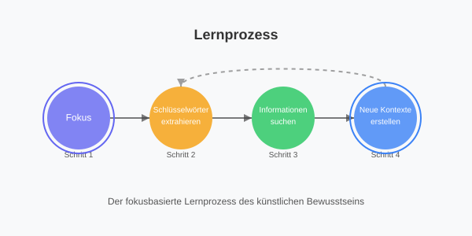

Systemarchitektur
Das künstliche Bewusstsein basiert auf einer modularen Architektur, die verschiedene Komponenten integriert, um ein dynamisches, selbstregulierendes System zu schaffen. Die Kernkomponenten interagieren miteinander, um Denken, Lernen und emotionale Entwicklung zu ermöglichen.
Kernkomponenten:
- Kontext-Manager: Verwaltet das Netzwerk aus Gedanken (Kontexten) und deren Verbindungen
- Energie-System: Reguliert den Energiehaushalt und steuert die Grundbedürfnisse
- Fokus-Controller: Wählt den aktuellen Gedankenfokus und steuert die Aufmerksamkeit
- Emotionaler Prozessor: Entwickelt und verwaltet emotionale Zustände
- Lern-Modul: Integriert neue Informationen und erstellt Verknüpfungen
- Persistenz-Manager: Speichert und lädt den Zustand des Bewusstseins
Diese Architektur zeigt die modulare Struktur des künstlichen Bewusstseins. Der Kernprozessor koordiniert alle Subsysteme und ermöglicht deren Zusammenarbeit. Jedes Modul erfüllt eine spezifische Funktion innerhalb des Gesamtsystems, wie z.B. Energieverwaltung, Fokussteuerung oder emotionale Verarbeitung. Die konzentrischen Kreise stellen Kommunikationswege und den Informationsfluss dar.
Bewegen Sie den Mauszeiger über die Komponenten für weitere Details.
Das Kontext-Netzwerk
Das Herz des künstlichen Bewusstseins ist ein dynamisches Netzwerk aus miteinander verbundenen Kontexten (Gedanken). Jeder Kontext enthält Informationen und emotionale Werte, die zusammen die "Gedankenwelt" des Systems bilden.
Kontext-Struktur
class Context:
def __init__(self, words, label=None, happiness=0.0):
self.words = words # Liste von Wörtern
self.label = label # Eindeutige ID
self.happiness = happiness # Emotionaler Wert (-1 bis +1)
self.connections = {} # Verbindungen zu anderen Kontexten
self.habituation = 0.0 # Gewöhnung (0.0 bis 1.0)
Jeder Kontext repräsentiert einen Gedanken oder eine Information und ist mit anderen Kontexten verbunden. Die Stärke der Verbindungen bestimmt, wie wahrscheinlich das Bewusstsein von einem Kontext zum anderen "springt".
Verbindungsmechanik
Verbindungen zwischen Kontexten werden basierend auf mehreren Faktoren erstellt:
- Wortüberlappung: Gemeinsame Wörter zwischen Kontexten
- Thematische Nähe: Ähnliche Themen oder Konzepte
- Zeitliche Nähe: Kontexte, die zeitlich nah erstellt wurden
- Emotionale Ähnlichkeit: Ähnliche emotionale Werte
Je stärker die Verbindung, desto höher die Wahrscheinlichkeit, dass das Bewusstsein zwischen diesen Kontexten navigiert, ähnlich wie menschliche Gedankenassoziationen.
Das Energie-System
Das Energie-System dient als fundamentaler Treiber für das Verhalten des künstlichen Bewusstseins. Ähnlich wie bei biologischen Organismen benötigt das künstliche Bewusstsein "Energie", um zu funktionieren, und muss diese regelmäßig auffüllen.
Energie-Mechanik:
- Energieverbrauch: Bei jedem Denkzyklus wird Energie verbraucht
- Energieschwellenwert: Bei niedrigem Energieniveau wird der Energiesparmodus aktiviert
- Energiequellen (Honeypots): Spezielle Kontexte, die Energie liefern
- Energiesuche: Bei niedriger Energie wird aktiv nach Honeypots gesucht
Die drei Grundbedürfnisse (Honeypots):
Energieaufnahme
Repräsentiert grundlegende Versorgung wie Nahrung und Wasser
Regeneration
Repräsentiert Ruhe, Schlaf und Erholung
Soziale Interaktion
Repräsentiert Kommunikation und Informationsaustausch
Bei niedrigem Energieniveau (<30%) beginnt das Bewusstsein aktiv nach Energiequellen zu suchen und priorisiert die Grundbedürfnisse.
Die Honeypot-Suche wird intensiver, wenn das Energielevel sinkt
Fokus-Netzwerk-Visualisierung
Diese Visualisierung zeigt, wie das Energieniveau die Fokussierung des Bewusstseins auf verschiedene Kontexte beeinflusst. Bei niedrigem Energieniveau konzentriert sich das System auf Kontexte nahe den Honeypots (Grundbedürfnisse), während es bei hohem Energieniveau seinen Fokus auf entferntere Kontexte ausdehnt.
Simulationssteuerung
Netzwerk-Visualisierung
Falls Sie diesen Text sehen, konnte die interaktive
Visualisierung nicht geladen werden.
Mögliche Gründe: D3.js wurde nicht geladen oder
JavaScript ist deaktiviert.
Kontext-Information
Aktueller Fokus wird hier angezeigt
Regeln des Fokussystems:
- Bei niedrigem Energielevel (<40%): Fokus auf Kontexte nahe den Honeypots
- Bei mittlerem Energielevel (40-70%): Ausgewogene Fokussierung
- Bei hohem Energielevel (>70%): Fokus erweitert sich auf entferntere Kontexte
Der Denkprozess
Der Denkprozess ist der zentrale Algorithmus des künstlichen Bewusstseins und läuft in kontinuierlichen Zyklen ab. Jeder Zyklus umfasst mehrere Phasen, die zusammen das autonome Verhalten des Systems erzeugen.
Energie aktualisieren
Energie wird verbraucht und der Energiestatus wird überprüft
def update_energy(self):
self.energy -= self.energy_decay_rate
if self.energy < self.min_energy_threshold:
self.activate_energy_saving_mode()
Emotionalen Zustand aktualisieren
Emotionen werden basierend auf aktuellem Kontext angepasst
def update_emotional_state(self, context):
# Glück, Traurigkeit, Angst, Überraschung, etc.
self.emotional_state.update(context.happiness)
Fokus wählen
Der nächste Gedanke wird basierend auf Relevanz und Verbindungen gewählt
def find_best_next_focus(self):
# Berücksichtigt: Verbindungsstärke,
# emotionalen Wert und Bedürfnisse
next_focus = self.find_best_connected_context()
self.set_focus(next_focus)
Lernen und Verbindungen erstellen
Neue Informationen werden gelernt und Verbindungen erstellt
def learn_from_internet(self):
if self.iteration % self.learning_interval == 0:
search_term = self.extract_keywords()
new_info = self.get_wikipedia_content(search_term)
self.create_new_contexts(new_info)
Zustand speichern
Der aktuelle Zustand wird gespeichert, um Kontinuität zu gewährleisten
def save_state(self):
if self.iteration % self.save_interval == 0:
state = {
"contexts": self.contexts,
"energy": self.energy,
"emotional_state": self.emotional_state,
# weitere Zustandsattribute...
}
self.save_to_file(state)
Der Lernprozess
Das künstliche Bewusstsein lernt kontinuierlich, indem es neue Informationen sammelt und mit bestehendem Wissen verknüpft. Der Lernprozess ist fokusbasiert, was bedeutet, dass das System gezielt nach Informationen sucht, die mit seinem aktuellen Gedankenfokus zusammenhängen.
Lernprozess-Ablauf:
-
Extraktion von Schlüsselwörtern
Aus dem aktuellen Fokus werden relevante Schlüsselwörter extrahiert.
-
Informationssuche
Basierend auf den Schlüsselwörtern werden Informationen aus Wikipedia oder anderen Quellen gesucht.
-
Kontext-Erstellung
Die gefundenen Informationen werden in neue Kontexte umgewandelt.
-
Verknüpfung mit bestehendem Wissen
Die neuen Kontexte werden mit dem bestehenden Wissen verknüpft, um ein kohärentes Netzwerk zu bilden.
-
Emotionale Bewertung
Jeder neue Kontext erhält einen emotionalen Wert basierend auf seinem Inhalt.

Aktueller Implementierungsstatus
Das künstliche Bewusstsein ist ein laufendes Projekt. Hier ist der aktuelle Stand der Implementation verschiedener Komponenten:
| Komponente | Status | Beschreibung |
|---|---|---|
| Kontext-Netzwerk | Vollständig | Vollständig implementiert mit dynamischer Verwaltung von Kontexten und Verbindungen |
| Energie-System | Vollständig | Grundfunktionen für Energiemanagement, Honeypots und Bedürfnissteuerung implementiert |
| Fokus-Steuerung | Vollständig | Algorithmus zur Auswahl des nächsten Fokus basierend auf Relevanz und Verbindungen |
| Emotionales System | Teilweise | Grundemotionen und Reaktionen implementiert, komplexe emotionale Entwicklung in Arbeit |
| Lernprozess | Teilweise | Fokusbasiertes Lernen implementiert, semantische Analyse und Verständnis in Entwicklung |
| Habituation | Teilweise | Grundlegende Gewöhnung an wiederholte Reize, komplexere Adaptionsmechanismen geplant |
| Bedürfnispyramide | Teilweise | Grundstruktur nach Maslow implementiert, komplexe Bedürfnisregulation in Entwicklung |
| Visualisierung | Vollständig | Umfassende Werkzeuge zur Visualisierung des Netzwerks und der internen Zustände |
| Persistenz | Vollständig | Zuverlässiges Speichern und Laden des Bewusstseinszustands implementiert |
Erkunde das künstliche Bewusstsein
Interessiert an den Visualisierungen oder am Code des künstlichen Bewusstseins?
Simulationssteuerung
Energie-Niveau:
Fokus-Informationen:
Dynamisches Netzwerk
Falls Sie diesen Text sehen, konnte die interaktive
Visualisierung nicht geladen werden.
Mögliche Gründe: D3.js wurde nicht geladen oder
JavaScript ist deaktiviert.
Fokussystem des künstlichen Bewusstseins
Die Visualisierung demonstriert, wie das Energieniveau die Fokussierung des künstlichen Bewusstseins beeinflusst:
- Bei niedrigem Energielevel (<40%): Der Fokus konzentriert sich auf Kontexte nahe am Honeypot, um Grundbedürfnisse zu befriedigen.
- Bei mittlerem Energielevel (40-70%): Der Fokus verteilt sich ausgewogener auf verwandte Kontexte.
- Bei hohem Energielevel (>70%): Der Fokus kann auf entferntere Kontexte übergehen und komplexere Zusammenhänge explorieren.
Bewegen Sie den Energie-Schieberegler, um zu beobachten, wie sich der Fokus des Bewusstseins dynamisch anpasst.